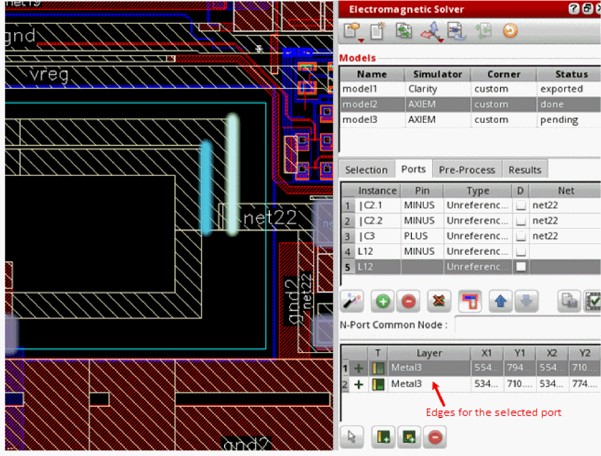

Managing Edges for Ports Created for EMX Models
For EMX models, the table at the bottom of the Ports tab shows the edges created for each port. In this table, you can manage edges for ports or create internal ports.
To create an internal port for a pin:
-
Click Add Port to create a new port in the ports table.
A blank row is added to the ports table. A blank row with default X and Y coordinates is added to the edges table. - Specify a pin name and net name in the new row that was added in the ports table.
-
Click Add Internal Connection (
) at the bottom of the Ports tab.
The pointer is changed to indicate that a command for port creation is in progress. -
Click the pin for which you want to create an internal port.
The tool creates a port at the pin location. The size of the port is same as that of the pin. - Select the undesired row in the edges table and click Remove Connection to delete the row.
To complete the edge details for ports:
- Click Add Edge Connection ( ) at the bottom of the Ports tab.
-
Click an edge on a selected shape in the model.
An edge is added and highlighted on the layout canvas. The layer name and coordinates of the edge are also shown in the edges table.
 - (Optional) Use the Move Connection ( ) command to change the location of an edge.
- Verify the connections by using the Validate Ports command. For details, see Checking the Validity of Ports Created for EMX Models.
Proceed with the generation of mesh and port connection review.
Return to top